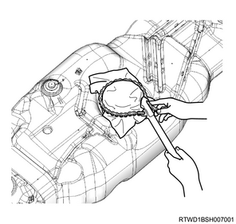
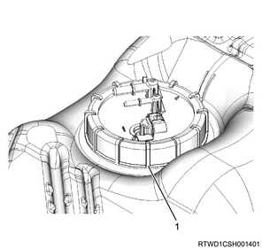
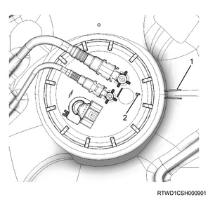

Fuel tank unit installation (4JK1)
1. Fuel tank unit installation
Note
- Before installing, clean the seal surfaces of the fuel tank and the fuel tank unit.
Caution
- Foreign material on the seal surface causes fuel leakage.
1. Install the fuel tank unit seal to the fuel tank.
Note
- Install a new fuel tank unit seal along the groove of the fuel tank opening.
2. Install the fuel tank unit to the fuel tank.
Note
- Install it gradually not to distort the float arm.
- Set the flange of the fuel tank unit on the fuel tank unit seal so that the convex portion of the fuel tank unit fits with the concave portion of the fuel tank.
3. Install the retainer ring to the fuel tank.

SST: 5-8840-2990-0 - wrench; fuel pump retainer

Tightening torque： 125 N・m { 12.7 kgf・m / 92 lb・ft }
Caution
- Cover the retainer ring with a shop cloth, etc.
- Take care as breakage may occur if the special tool is applied to the ribbed bottom portion of the retainer ring.

- Ribbed bottom portion
Note
- Align the positions of the alignment mark on the fuel tank unit side and the alignment mark on the fuel tank side as shown in the diagram.

- Alignment mark on the fuel tank side
- Alignment mark on the fuel tank unit side
2. Fuel tank installation
1. Install the fuel tank to vehicle.
Caution
- Do not damage the hose or the tube by contacting with other parts.
Note
- Put the fuel tank on the lifter and install the fuel tank by elevating the lifter.
2. Connect the connector to the fuel tank unit.
Caution
- Securely connect the connector to the stopper.
3. Install the fuel tank band to the frame.
Tightening torque： 68 N・m { 6.9 kgf・m / 50 lb・ft }
Caution
- Securely install the anchor of the tank band to the guide hole of the frame.

4. Connect the evaporator hose to the filler neck.
5. Connect the breather hose to the filler neck.
6. Connect the fuel filler hose to the filler neck.

- Fuel filler hose
- Evaporator hose
- Breather hose
7. Remove the lifter from the fuel tank.
3. Fuel tube connect
1. Connect the fuel return tube to the fuel hose.
2. Connect the fuel feed tube to the fuel hose.

- Fuel feed tube
- Fuel return tube
4. Fuel filler cap installation
1. Install the fuel filler cap to the filler neck.
Note
- Tighten the filler cap until it clicks at least 3 times.
5. Fuel air bleed
1. Press the priming pump.
Note
- Press the priming pump until it gets stiff.

- Priming pump
- Fuel filter with the sedimenter
Caution
- Insufficient air removal work may lead to malfunction of the engine.
6. Battery ground cable connect
1. Connect the battery ground cable to the battery.
2. Close the engine hood assembly.
3. Lower vehicle.
7. Fuel inspection
1. Start the engine.
Note
- Check for loosening or fuel leakage at the connections of the fuel system.